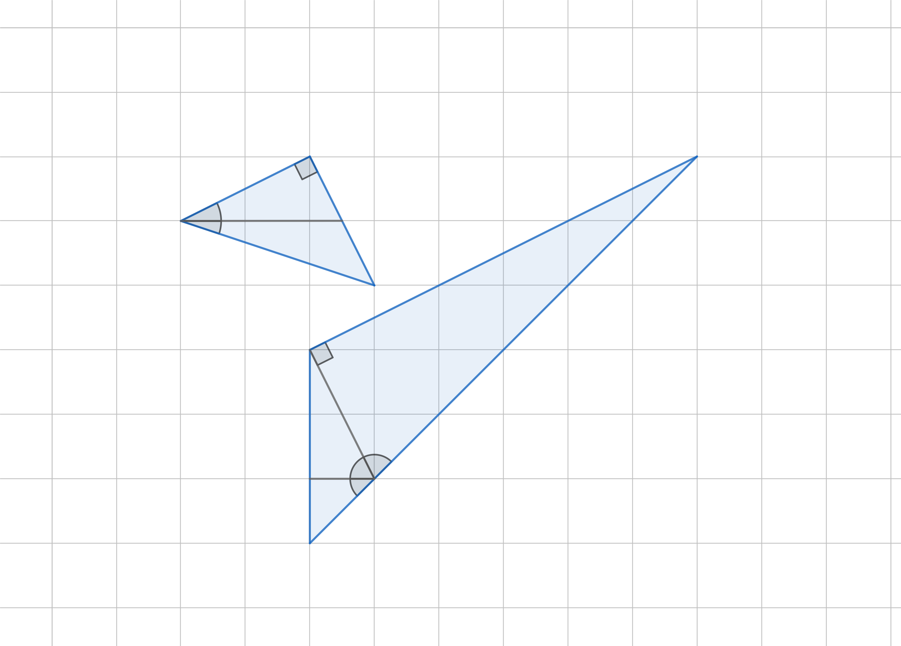

Prove that the matrix given by $$ \begin{bmatrix} 1 & \frac 12 & \dots & \frac 1n\\ \frac 12 & \frac 13 & \dots & \frac 1{n+1}\\ \vdots & \vdots & \ddots & \vdots\\ \frac 1n & \frac 1{n+1} & \dots & \frac 1{2n-1}\\ \end{bmatrix} $$ is non-singular.
Observe that if we denote the matrix above with \(H = [H_{ij}]\), then we have \[ H_{ij} = \int_{0}^{1} x^{i+j-2}. \] Now let \( \vec{x} = (x_1, x_2, \dots, x_n)^\intercal \neq \vec 0\) be an arbitrary column vector. Some straightforward calculations give: \begin{align} \vec{x} H \vec{x}^\intercal &= \sum_{i, j=1}^{n}\left(x_i x_j\int_{0}^{1} x^{i+j-2}\right)dx\\ &= \int_{0}^{1}\left(\sum_{i=1}^{n} x_ix^{i-1}\right)^2 dx > 0. \end{align} Therefore, the only solution to the equation \(H\vec x = \vec 0\) is the trivial solution and the conclusion follows.
Suppose \(n\) is an odd number and \(a_1, a_2, \dots, a_n\) is a permutation of \(1, 2, \dots, n\). Prove that the product $$ (a_1-1)\cdot(a_2-2)\dots (a_n-n) $$ is always an even number.
One only need to observe that \[ (a_1-1) + (a_2-2) + \dots + (a_n-n) = 0. \] As the sum of an odd number of integers results in zero, at least one of them should be even.
Prove the following two equalities $$ \arctan(\frac 12) + \arctan(\frac 13) = \frac \pi 4\\ \arctan(1) + \arctan(2) + \arctan(3) = \pi\\ $$

Suppose that \(P\) is a polynomial that takes both positive and negative values. Prove that the function \(|P|\) is not a polynomial anymore.
Suppose to the contrary that \(|P|\) is a polynomial and without loss of generality also suppose that \(P\) takes positive values infinitely many times. Therefore the polynomial equality \(|P(x)| - P(x) = 0\) has infinitely many solutions. Hence, the fundamental theorem of algebra gives \(|P(x)| = P(x)\) which contradicts the fact that \(P\) takes both positive and negative values.